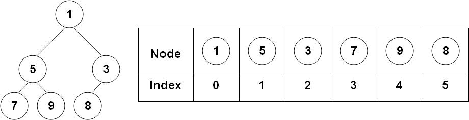
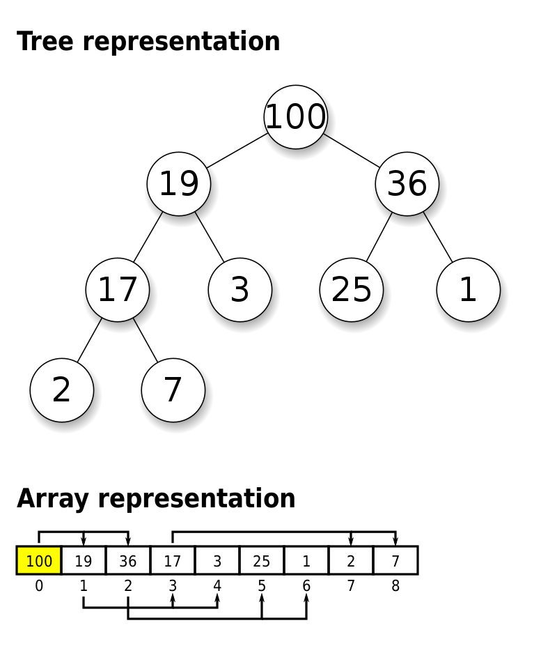

Grafos e Árvores
Caminhos mínimos (com pesos)
Busca em Profundidade (DFS)
-
Algoritmo recursivo curto que encontra todos os vértices acessíveis a partir da raiz
-
Útil para problemas como
- identificar/contar componentes conexos
- encontrar ciclos
- ordenação topológica
Caminhos mínimos
Dados vértices $v$ e $w$, encontrar o caminho de menor tamanho entre eles.
- Busca em Largura -> grafos sem pesos
- E se tem pesos?
Think-pair-share
Teremos uma sequência de perguntas sobre grafos com pesos
- reservem um lugar para anotar suas ideias
- escolham uma dupla
- para cada pergunta, 30s para pensar em uma resposta
- 30s para discutir com sua dupla
- 1m para compartilhar ideias na sala
A busca em largura funciona em grafos com pesos?
Se sim explique, se não dê um contra-exemplo
E se modificássemos a BFS para pegar as menores arestas primeiro?
Isso funciona? Se sim explique, se não dê um contra-exemplo
E se modificássemos a BFS para pegar os vértices mais próximos primeiro?
Isso funciona? Se sim explique, se não dê um contra-exemplo
Vamos pro handout!
15 min
Conclusões?
Algoritmo de Dijkstra
- menor caminho em grafos com pesos não negativos
- ideia central: iterativamente pegar o vértice mais próximo da fonte
- ao processarmos um vértice a distância até ele não muda mais
Algoritmo de Dijkstra
Entradas:
- $G=(V, E)$ um grafo direcionado com pesos não negativos armazenados em uma matriz quadrada $P$
- $s, t \in V$ dois vértices (fonte e destino)
Auxiliares:
- array
predde tamanho $|V|$ inicializado com-1 - array
distde tamanho $|V|$ inicializado com $+\infty$ - conjunto
hcontendo vértices já alcançados mas ainda não processados
Saída:
- array
pathcom o caminho de $s$ até $t$ ou $\emptyset$ se não houver caminho - tamanho do caminho
Algoritmo de Dijkstra
dist[s] <- 0
pred[s] <- s
INSERE s EM h
PARA i=1 até |V| FAÇA
k <- elemento em h com menor dist
PARA CADA VIZINHO j DE k FAÇA
distK <- dist[k] + P[k, j]
SE distK < dist[j] ENTÃO
dist[j] <- distK
pred[j] <- k
INSERE j EM h # não faz nada se já estiver em h
FIM
FIM
FIM
PREENCHA path USANDO O ARRAY pred
DEVOLVA path, dist[t]
Algoritmo de Dijkstra
-
Complexidade depende da operação
elemento em h com menor dist- guardar todos em um vetor dinâmico e pegar o menor é $\mathcal{O}(V)$
- faço isso no máximo $V$ vezes
-
Calculamos
distKno máximoEvezes
Total $\mathcal{O}(E + V^2) = \mathcal{O}(V^2)$
Dá para fazer melhor?
Min-heap

Propriedades:
- todo nó tem no máximo dois filhos
- "completo" à esquerda
- valor de um nó é menor que o valor de seus filhos
Operações:
INSERE(H, V)MENOR(H)devolve o menor valor e o remove
Max-heap (alternativa)

Propriedades:
- todo nó tem no máximo dois filhos
- "completo" à esquerda
- valor de um nó é maior que o valor de seus filhos
Representação como array
Dado um nó armazenado no índice $i$
- em quais índices estão seus dois filhos?
- em qual índice está seu pai?
Representação como array
Dado um nó armazenado no índice $i$
- em quais índices estão seus dois filhos? $2i+1$ e $2i+2$
- em qual índice está seu pai? $(i-1)//2$
Como representar as operações?
-
INSERE- colocar no final do heap
- troca com pai se for menor
- faz passo 2 até não dar mais
-
REMOVE- troca elemento 0 com último elemento
- diminui tamanho do min-heap
- troca raiz com o menor dos filhos até não dar mais
Melhorando Dijkstra com min-heap
ENQUANTO TAM(h) > 0 FAÇA
_, k <- MENOR(h) # pega o com menor dist
SE k já foi visitado ENTÃO continua loop FIM
PARA CADA VIZINHO j DE k FAÇA
distK <- dist[k] + P[k, j]
SE distK < dist[j] ENTÃO
dist[j] <- distK
pred[j] <- k
INSERE(h, (distK, j)) # insere o par (dist, índice),
# usando dist como valor
FIM
FIM
FIM
Melhorando Dijkstra com min-heap
Qual a complexidade de
INSERE?MENOR?
Melhorando Dijkstra com min-heap
Qual a complexidade de
INSERE? $\mathcal{O}(\log N)$MENOR? $\mathcal{O}(\log N)$
Loop externo roda no máximo $E$ vezes. (Por que?)